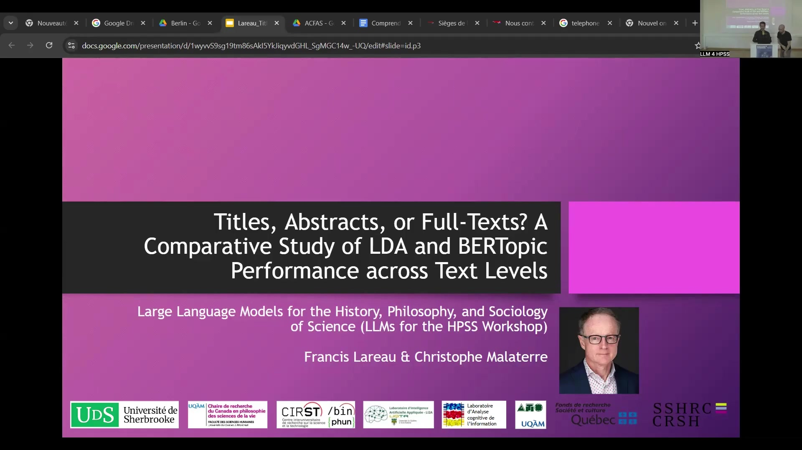
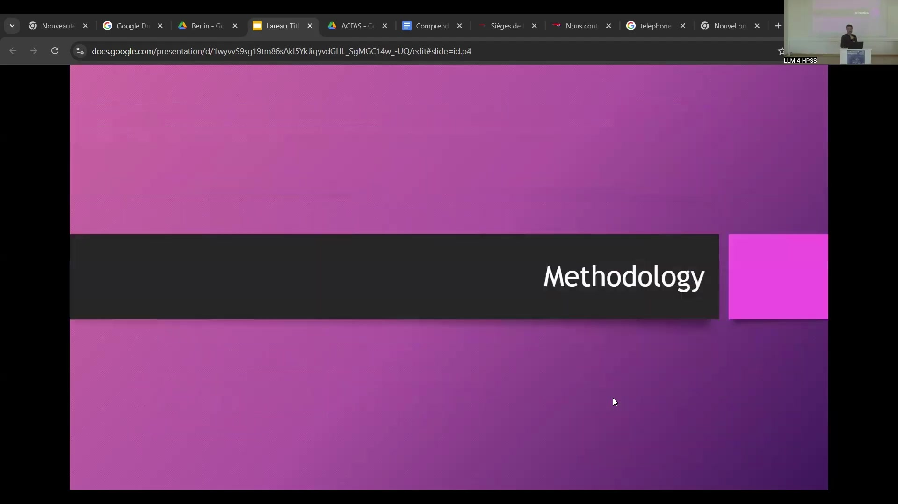
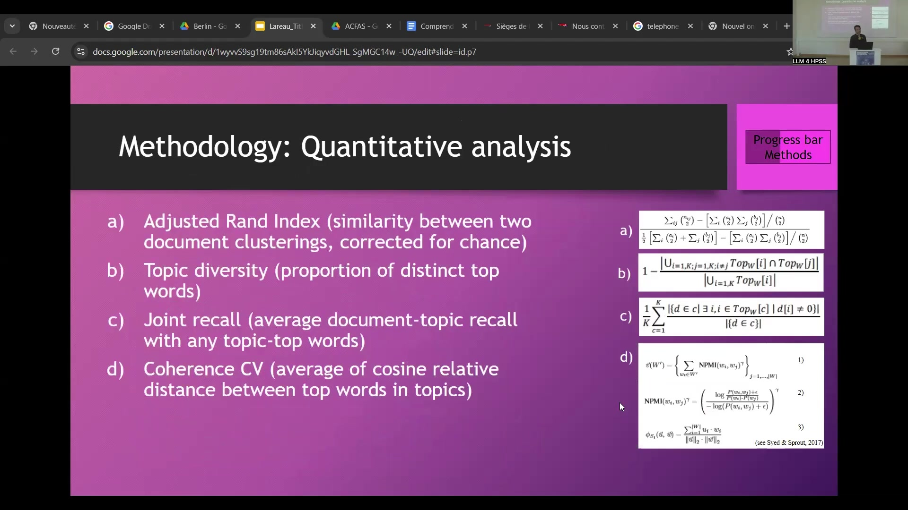
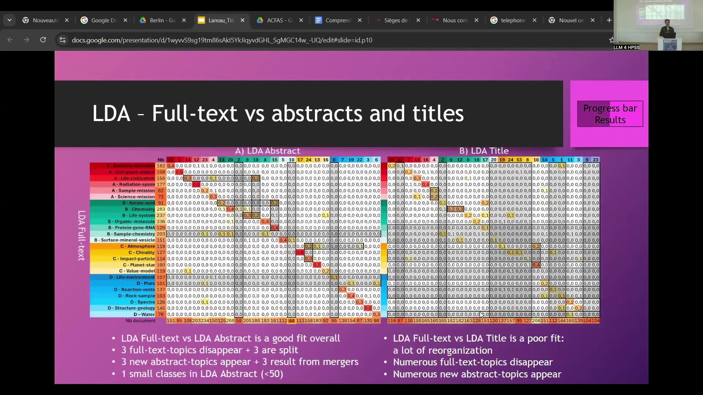
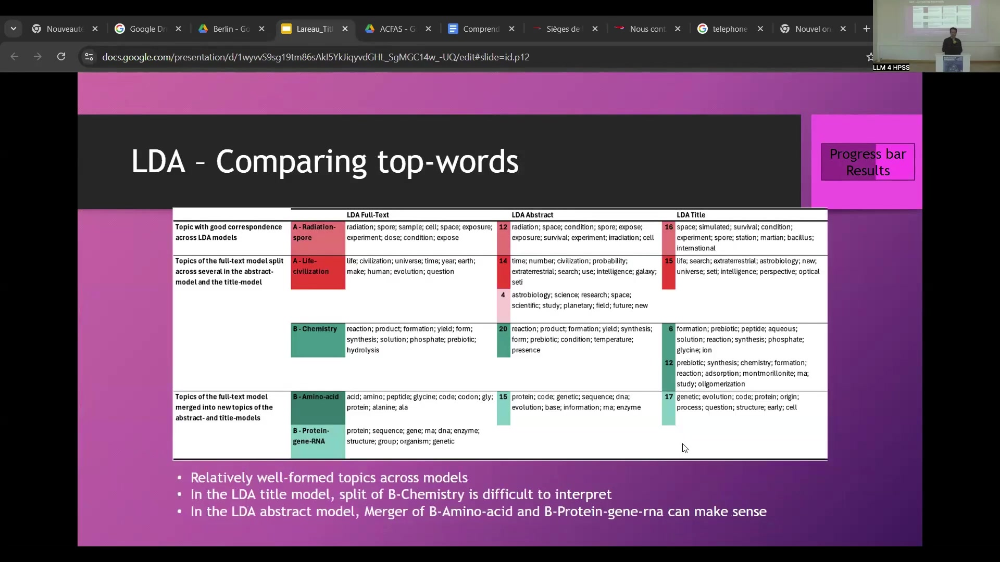
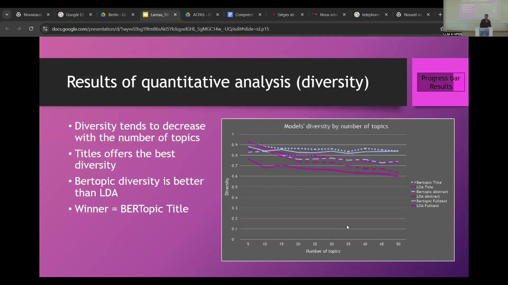
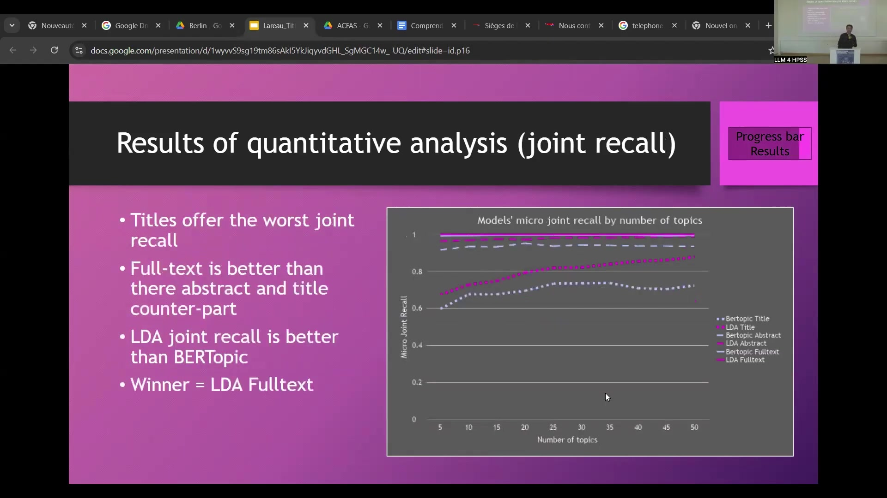
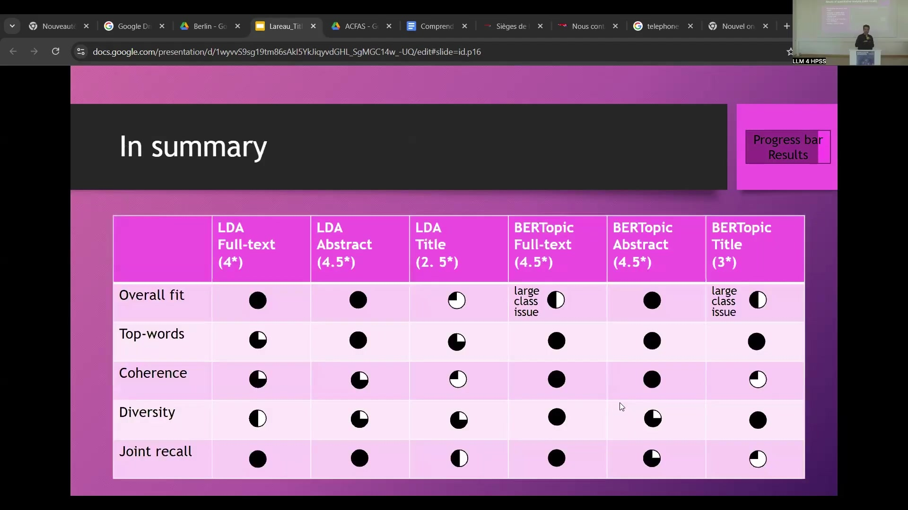
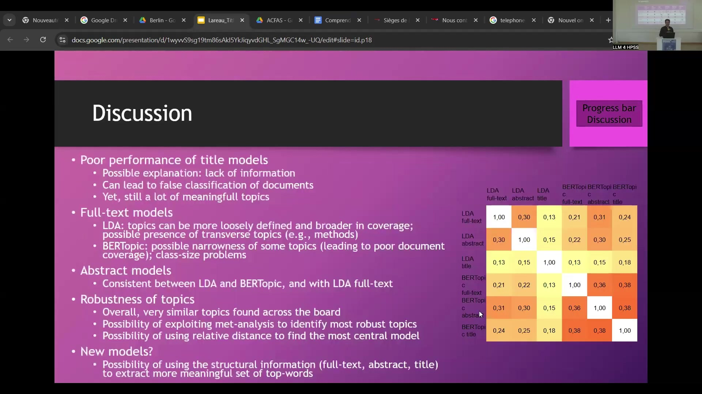

14 Titles, Abstracts, or Full-Texts? A Comparative Study of LDA and BERTopic Performance across Text Levels
Overview
Researchers Francis Lareau, from the Université de Sherbrooke and the Université du Québec à Montréal, alongside Christophe Malaterre, also from the Université du Québec à Montréal, conducted a comprehensive comparative study. Their investigation sought to determine whether applying topic modelling to titles or abstracts suffices for scientific literature, or if full-text analysis remains indispensable, particularly within the history, philosophy, and sociology of science. This inquiry directly addresses the substantial resources full-text processing demands.
The study meticulously constituted a corpus of scientific articles, subsequently identifying their title, abstract, and full-text sections. Researchers then applied two distinct topic modelling approaches—Latent Dirichlet Allocation (LDA) and BERTopic—to each of these three textual levels. Following this, they rigorously analysed and compared the six resulting topic models.
This comparison employed both qualitative methods, drawing upon a pre-existing detailed analysis of an astrobiology corpus, and quantitative measures. These quantitative metrics included the Adjusted Rand Index, topic diversity, joint recall, and Coherence CV. The findings aim to guide researchers in selecting appropriate text levels for topic modelling, aligning their choices with specific objectives and resource constraints by highlighting performance variations across different models and textual structures.
14.1 Research Rationale: Topic Modelling Efficacy Across Textual Levels

Investigators initiated an inquiry to ascertain the most effective textual level—titles, abstracts, or full-texts—for applying topic modelling techniques to scientific literature. This area holds particular relevance for the history, philosophy, and sociology of science. Topic modelling has, indeed, emerged as a crucial instrument for dissecting substantial volumes of scholarly publications.
This powerful technique enables diverse analytical tasks, such as identifying research trends and paradigm shifts, uncovering thematic substructures and their interrelations, and tracing the evolution of scientific terminology. Observations from existing literature, however, reveal a varied application of topic modelling across these different textual components.
This background prompts a central research question: can analyses restricted to titles or abstracts yield sufficient insights, or does comprehensive full-text analysis remain essential? The considerable resources demanded for obtaining, preprocessing, and analysing complete full-text corpora lend urgency to this question.
To address this, investigators first assembled a corpus of scientific articles. Subsequently, they meticulously identified the title, abstract, and full-text sections for each document. Two distinct topic modelling methodologies, Latent Dirichlet Allocation (LDA) and BERTopic, were then applied to each of these three textual levels. Finally, the six generated topic models underwent rigorous qualitative and quantitative comparison to evaluate their respective performances.
14.2 Methodology: Topic Modelling Approaches – LDA and BERTopic

Investigators employed two distinct topic modelling methodologies: Latent Dirichlet Allocation (LDA) and BERTopic. Both approaches operate on the premise that documents can be translated into numerical vectors. This transformation allows topics to be identified through the analysis of repetitions that highlight linguistic regularities. Machine learning techniques then automate the detection of these underlying patterns.
Latent Dirichlet Allocation, a well-established statistical method, constructs simple vector representations by counting word occurrences within documents. Within this framework, topics manifest as latent variables governed by Dirichlet’s probability distribution. A key advantage of LDA is its capacity to handle extensive texts, rendering it applicable to titles, abstracts, and full-text documents alike.
Conversely, BERTopic offers a more recent, modular alternative. This approach leverages vector representations derived from Large Language Models, with BERT (Bidirectional Encoder Representations from Transformers) serving as its foundational model. In BERTopic, topics emerge as clusters of similar documents.
Whilst earlier iterations of BERTopic faced limitations with long texts, this study incorporated new embedding techniques. These advancements enable the processing of substantial textual inputs, up to approximately 131,000 tokens, thereby extending BERTopic’s utility to full-text analysis.
14.3 Methodology: Material for Qualitative Comparison – An Astrobiology Corpus

For the qualitative comparison, researchers utilised material from a prior in-depth topic analysis of an astrobiology corpus, detailed in Malaterre & Lareau (2023). Following a thorough evaluation process, they selected an existing Latent Dirichlet Allocation (LDA) full-text model, which featured 25 distinct topics, as a reference. Each of these 25 topics had undergone meticulous analysis, examining its most representative words and associated documents, leading to the generation of a descriptive label for each topic using pertinent keywords.
Subsequently, the interrelations between these topics were quantified. Researchers calculated the mutual correlation based on how topics appeared together within documents. A community detection algorithm then processed these correlations, successfully identifying four overarching thematic clusters. These clusters received designations using letters (A, B, C, D) and distinct colours (red, green, yellow, and blue) for clarity.
The study presented these findings visually, employing a graph that illustrated the correlations between the 25 topics, complete with their assigned labels and colour-coded cluster memberships. In this graphical representation, the thickness of the lines signified the strength of the correlation between connected topics, whilst the size of the circles indicated the overall prevalence of each topic throughout the entire document collection. In essence, this pre-existing, detailed analysis provided a robust qualitative foundation against which the six topic models generated in the current investigation could be systematically compared.
14.4 Methodology: Quantitative Analysis Metrics

Researchers employed four distinct metrics for the quantitative analysis to compare the topic models. Firstly, the Adjusted Rand Index (ARI) served to evaluate the similarity between any two document clusterings produced by the models, with a crucial correction for agreements that might occur by chance. An ARI value of zero typically signifies a random clustering.
Secondly, topic diversity was assessed. This metric quantifies the proportion of distinct top words that characterise the topics within a given topic model, indicating whether different topics are described by unique sets of terms. Thirdly, joint recall provided a measure of how well the top words collectively represent the documents classified under each topic. Specifically, it evaluates the average document-topic recall, considering the relationship between a topic’s top words and its associated documents.
Finally, coherence, specifically Coherence CV, was measured. This metric aims to determine if the top words constituting a topic are semantically related and form a meaningful group. Its calculation involves averaging the cosine relative distance between the top words within each topic.
14.5 Results: Adjusted Rand Index Analysis of Model Similarity

The application of the Adjusted Rand Index (ARI) across all six topic models revealed varying degrees of similarity between them. As a reminder, an ARI score of zero signifies that the agreement between two clusterings is no better than random. The results, often visualised as a heatmap, indicated that the Latent Dirichlet Allocation (LDA) model applied to titles (LDA Title) was the most distinct. It showed the lowest similarity to the other models, with ARI values generally falling below 0.2.
In contrast, all other models demonstrated a better overall match with one another, achieving ARI values consistently above 0.2. Notably, the BERTopic models exhibited a stronger internal coherence; they tended to align more closely with each other, yielding ARI values that surpassed 0.35. Within this group, the BERTopic model applied to abstracts (BERTopic Abstract) emerged as a somewhat central figure, as it corresponded well with nearly every other model, the only significant exception being the divergent LDA Title model.
14.6 Results: Qualitative Comparison of LDA Models
A more detailed qualitative analysis focused on the Latent Dirichlet Allocation (LDA) models. When comparing the LDA full-text model with the LDA abstract model (Table A), researchers observed a good overall fit. This conclusion arose because topics from one model generally found a corresponding match in the other, evidenced by a high proportion of shared documents, which formed a noticeable reddish diagonal in the suitably organised heatmap.
Nevertheless, some transformations occurred: three topics present in the full-text LDA model disappeared in the abstract model, whilst another three full-text topics split into multiple, more granular topics within the abstract representation. Conversely, three entirely new topics emerged in the LDA abstract model, and three other abstract topics appeared to be the result of mergers from the full-text model. An additional observation was the presence of one small class, or topic, in the LDA abstract model, encompassing fewer than 50 documents.
The comparison between the LDA full-text model and the LDA title model (Table B) revealed a starkly different picture. Here, the fit was poor, indicating substantial reorganisation of thematic structures. Numerous topics from the full-text model disappeared when moving to the title-based model, and concurrently, many new topics emerged that were specific to the LDA title analysis. The heatmap for this comparison displayed a profusion of dark vertical and horizontal lines, visually underscoring the extensive restructuring of topics.
14.7 Results: Qualitative Comparison Involving BERTopic Models
Investigators then examined the BERTopic models in comparison. When contrasting the BERTopic full-text model with the original LDA full-text model (Table C), they found an average overall fit. From the perspective of the LDA full-text topics, eight disappeared in the BERTopic full-text representation, and six were split into more granular topics. Conversely, five new topics emerged within the BERTopic full-text model, and one topic appeared to be the result of a merger. This model, however, presented class size issues: specifically, four small classes and one extremely large class.
Next, comparing the BERTopic abstract model against the LDA abstract model (Table D), researchers noted a relatively good overall fit. In this transition, four topics from the LDA abstract model disappeared, whilst six were split. The BERTopic abstract model introduced two new topics and featured four topics that resulted from mergers. Importantly, the class sizes in this BERTopic abstract model were generally balanced.
Finally, the comparison between the BERTopic title model and the LDA title model (Table E) indicated an average fit. Seven topics from the LDA title model were absent in the BERTopic title model, and one LDA title topic was split. The BERTopic title model, in turn, presented seven new topics and one topic formed by a merger. This model also exhibited class size concerns, with three small classes and one large class.
14.8 Results: LDA Top-Words Qualitative Analysis

A qualitative assessment of the top words defining topics within the Latent Dirichlet Allocation (LDA) models revealed that, generally, the topics were relatively well-formed across the full-text, abstract, and title variations. Investigators observed instances of robust topics that maintained a strong correspondence across all three LDA models. A notable example was the topic labelled “A-Radiation spore” in the LDA full-text model, which aligned closely with semantically similar topics in both the LDA abstract model (characterised by top words such as “radiation,” “spore,” and “space”) and the LDA title model (with top words including “space,” “simulated,” and “spore”).
Furthermore, some topics identified in the full-text model underwent splitting, fragmenting into several distinct topics within the abstract and title models. For instance, the “A-Life civilization” topic from the full-text analysis split, and one of its resultant components in the abstract model cohered into a general theme concerning research and astrobiology; this particular split was deemed logical. Another full-text topic, “B-Chemistry,” also fragmented, though its resulting divisions proved more challenging to interpret readily without deeper investigation.
Conversely, the analysis also identified instances of topic merging. Certain topics from the full-text model consolidated into new, more encompassing topics in the other LDA models. For example, the distinct full-text topics “B-Amino-acid” and “B-Protein-gene-rna” merged within the LDA abstract model. This fusion created a broader, more generalised topic, a development considered to be a sensible thematic consolidation.
14.9 Results: BERTopic Top-Words Qualitative Analysis

Continuing the top-words assessment with the three BERTopic models (full-text, abstract, and title), researchers again found that the topics were, on the whole, relatively well-formed when compared against the LDA full-text baseline. The previously identified robust topic, “A-Radiation spore,” demonstrated its stability by maintaining good correspondence across all BERTopic model variations as well.
The topic “A-Life-civilization,” also from the LDA full-text model, showed relative stability when analysed with BERTopic across the different text levels. However, it did undergo some degree of splitting here and there. These divisions typically resulted in the formation of narrower, more specific topics pertaining to extraterrestrial life. Similarly, the “B-Chemistry” topic from the LDA full-text model, when subjected to BERTopic analysis across the full-text, abstract, and title inputs, also tended to split. This fragmentation consistently led to the emergence of more narrowly focused chemical themes.
14.10 Results: Quantitative Analysis – Coherence (CV)

Researchers then presented the performance metrics for all six models, considering a range of topic numbers from 5 to 50. Beginning with coherence (specifically Coherence CV), which assesses the semantic relatedness of a topic’s top words, several patterns emerged. The analysis revealed that models based on titles consistently yielded the poorest coherence scores.
Comparing text levels, abstract-based models generally demonstrated superior coherence to their full-text counterparts. When contrasting the modelling techniques, BERTopic typically outperformed Latent Dirichlet Allocation (LDA) in terms of coherence for both abstract and title inputs. However, this advantage for BERTopic tended to lessen as the specified number of topics for the models rose. Across all configurations, the BERTopic Abstract model clearly emerged as the top performer for this particular metric.
14.11 Results: Quantitative Analysis – Topic Diversity

The analysis of topic diversity, which measures the extent to which topics are described by distinct sets of words, showed a general trend: diversity tended to decrease as the number of topics in the models increased. Models constructed from titles offered better diversity scores when compared to their abstract or full-text equivalents.
Regarding the modelling techniques, BERTopic consistently achieved higher diversity scores than Latent Dirichlet Allocation (LDA). The BERTopic Title model emerged as the winner for this metric, although the BERTopic Full-text model followed very closely in performance.
14.12 Results: Quantitative Analysis – Joint Recall

Joint recall, a metric that evaluates how effectively the top words of a topic collectively represent all documents classified within that topic, yielded further insights. Models based on titles demonstrated the poorest performance in terms of joint recall. Conversely, full-text models generally outperformed their abstract and title-based counterparts on this measure.
When comparing the two primary modelling techniques, Latent Dirichlet Allocation (LDA) tended to achieve better joint recall than BERTopic. The LDA Full-text model and the BERTopic Full-text model emerged as the top performers for joint recall, with the BERTopic Abstract model also demonstrating strong results, following very closely behind.
14.13 Results: Summary of Model Performance
To provide a consolidated view, researchers assembled the various results into a summary table. This table depicted the performance of each of the six models—LDA Full-text, LDA Abstract, LDA Title, BERTopic Full-text, BERTopic Abstract, and BERTopic Title—across several assessment categories: overall fit, top-words quality, coherence, diversity, and joint recall. Performance levels were visually represented using circles, where a fully black circle indicated the highest score and a white circle denoted the lowest.
It is crucial to recognise that these results do not point to a single, universally superior model. The optimal choice invariably depends on the specific research objectives and needs of the investigator. For instance, if the primary aim involves discovering major thematic trends, and the precise classification of every single document is not paramount, then metrics like poor recall or the presence of a large class of unassigned documents might not present critical drawbacks.
Conversely, if the objective demands that all identified topics comprehensively cover the maximum number of relevant documents, then certain models become less suitable. Specifically, researchers do not recommend BERTopic Full-text and BERTopic Title for such tasks, as they both tended to produce large groups of unclassified documents; BERTopic Title also suffered from poor recall. The LDA Title model is likewise not advised for this scenario, given its generally weak performance across almost all assessment criteria.
In light of these findings, the researchers generally recommend performing topic modelling on either abstracts or full-texts, using either LDA or BERTopic. This recommendation comes with the important proviso that the chosen combination does not lead to significant misclassification of documents pertinent to the topics of interest.
14.14 Discussion and Conclusion: Implications and Future Directions
The research culminated in several key findings and pointed towards future avenues of exploration. Firstly, title-based models generally exhibited poor performance. A plausible explanation for this lies in the inherent lack of informational content within titles alone, which can consequently lead to the misclassification of documents. Nevertheless, it is noteworthy that even the BERTopic Title model managed to identify a number of meaningful topics, suggesting that the utility of titles is not entirely negligible. This highlights a potential need to strike a balance between achieving well-defined topics and ensuring adequate document coverage for each topic.
Secondly, full-text models presented their own set of challenges. With Latent Dirichlet Allocation (LDA) applied to full-texts, topics sometimes appeared more loosely defined and broader in their thematic scope. Furthermore, such models occasionally identified transverse topics—for instance, those related to methodology—which might be secondary to the primary research themes of interest. BERTopic, when applied to full-texts, sometimes produced topics that were overly narrow. This specificity could lead to poor document coverage and contribute to problems with class size, such as the emergence of extremely large, undifferentiated clusters of documents.
Thirdly, abstract-based models demonstrated commendable performance. The results derived from abstracts showed consistency between both LDA and BERTopic approaches. Moreover, these abstract models aligned well with the LDA full-text model, indicating that abstracts often provide a balanced and effective summary of information suitable for topic modelling.
A fourth significant observation concerned the robustness of topics. Overall, the study found that very similar thematic structures emerged across the diverse range of models and text levels analysed. This consistency opens possibilities for employing meta-analytic techniques to pinpoint the most robust and consistently identified topics. Furthermore, the relative distances or similarities between models (such as those measured by the Adjusted Rand Index) could potentially be used to identify an optimal or most central model. In this particular study, the BERTopic Abstract model appeared to fulfil such a role, performing strongly across various metrics.
Lastly, the findings prompt consideration of new modelling approaches. Researchers hypothesise that it might be feasible to develop novel models, or refine existing ones, by explicitly leveraging the structural information inherent in scientific articles—that is, the distinct characteristics of full-texts, abstracts, and titles. Such an approach could potentially lead to the extraction of an even more meaningful and nuanced set of topics or defining top-words.